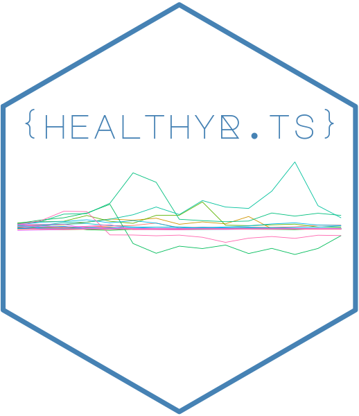

Changelog
Source:NEWS.md
healthyR.ts 0.3.1
CRAN release: 2024-10-11
Breaking Changes
- Fix #509 - Drop invisible returns.
Minor Fixes and Improvements
- Fix #511 - Fix a bug in
ts_random_walk()that would generate 3 runs when run was set to less than 2.
- Fix #511 - Fix a bug in
- #518 - Fix ts_qq_plot() - Add color and alpha to the output.
- #516 - Fix ts_vva_plot() - Correct to add cumsum of the passed value and correct lagged differences.
- #521 - Fix for CRAN maintenance.
- Remove
timetk::step_holiday_signature()as it is throwing recycle erros in boilerplate functions and I currently cannot figure out why.
healthyR.ts 0.3.0
CRAN release: 2023-11-15
New Features
- Fix #484 - Add function
util_log_ts() - Fix #485 - Add function
util_singlediff_ts() - Fix #486 - Add function
util_doublediff_ts() - Fix #487 - Add function
util_difflog_ts() - Fix #488 - Add function
util_doubledifflog_ts()
Minor Fixes and Improvements
- Fix #480 - Add attributes to output of
ts_growth_rate_vec() - Fix #481 #483 - Update
auto_stationarize() - Fix #489 - Update
ts_auto_arima()to utilize the parsnip engine ofauto_arimaif.tuneis set toFALSE
healthyR.ts 0.2.11
CRAN release: 2023-10-14
New Features
- Fix #459 - Add function
ts_growth_rate_vec() - Fix #463 - Add function
ts_adf_test() - Fix #417 - Add function
auto_stationarize() - Fix #460 - Add function
ts_growth_rate_augment()
Minor Fixes and Improvements
- Fix #456 Fix boilerplate examples to set the
.trueparam toFALSE
healthyR.ts 0.2.9
CRAN release: 2023-06-24
Minor Fixes and Improvements
- Fix #436 - Modify all boilerplate fitting functions to use
tune::show_best(n = 1)instead ofInfand usingdplyr::slice(1)
healthyR.ts 0.2.8
CRAN release: 2023-04-14
Breaking Changes
- Fix #424 - Require R >= 3.3
Minor Fixes and Improvements
- Fix #425 - Fix
ts_ma_plt()errors stemming from deprecations. Also fixed examples of all boilerplate functions.
healthyR.ts 0.2.7
CRAN release: 2023-01-28
New Features
- Fix #397 - Add function
ts_geometric_brownian_motion() - Fix #402 - Add function
ts_brownian_motion_augment() - Fix #403 - Add function
ts_geometric_brownian_motion_augment() - Fix #404 - Add function
ts_brownian_motion_plot()
Minor Fixes and Improvements
- Fix #395 - Update and optimize
ts_brownian_motion()49x speedup by way of vectorization. - Fix #412 - Update all brownian motion functions to have an attribute of
.motion_type - Fix #411 - Drop the invisible return for
ts_vva_plot()
healthyR.ts 0.2.6
CRAN release: 2023-01-06
New Features
- Fix #389 - Add function
ts_brownian_motion()
Minor Fixes and Improvements
- Fix #387 - Fix documentation for
ts_scedacity_scatter_plot()
healthyR.ts 0.2.5
CRAN release: 2022-11-16
Minor Fixes and Improvements
- Fix #380 - Fix
ts_lag_correlation()to fix a bug in the correlation matrix calculation where columns may come through that are not numeric and are not part of the original value and it’s lags.
healthyR.ts 0.2.4
CRAN release: 2022-11-10
Minor Fixes and Improvements
- Fix #368 - Pull request from @EmilHvitfeldt to use
recipes::check_type()on recipe functions. - Fix #370 - Update
ts_model_spec_tune_template()to setregressionas the argument toparsnip::set_mode()which fires a failure in thets_model_auto_tune()not running on newer versions ofparsnip
healthyR.ts 0.2.3
CRAN release: 2022-10-03
New Features
- Fix #357 - Add function
ts_wfs_xgboost()
Minor Fixes and Improvements
- Fix #358 - Update
ts_calendar_heatmap_plot()Change weekdays and Monthls to abbreviated labels.
healthyR.ts 0.2.2
CRAN release: 2022-08-07
Breaking Changes
- Fix 345 - Fix
ts_sma_plot()There is a change in the API of this function. It now requires adata.frame/tibbleto be passed to the.dataparameter, and it also now requires the input of a date column and value column. This also now no longer returns invisible. There was also a fix in the sliding calculation to appropriately use the given value column.
New Features
- Fix #342 - Add function
ts_extract_auto_fitted_workflow()Which will pull out the fitted workflow from any of the Boilerplate functions.
Minor Fixes and Improvements
- Fix #343 - Add attributes to output list of boilerplate functions.
- Fix #347 - Fix
ts_auto_lm()by droppingstep_rm()andstep_corr()which would preventcalibrate_and_plot()from working due tomodeltime_calibration()failing. Also dropped unused parameters from function and documentation. - Fix #349 - Fix to
ts_lag_correlation()selectstatement.
healthyR.ts 0.2.1
CRAN release: 2022-07-19
New Features
- Fix #306 - Add function
ts_time_event_analysis_tbl() - Fix #315 - Add function
ts_lag_correlation() - Fix #327 - Add some date helpers
- Fix #326 - Add functions
ci_hi()andci_lo() - Fix #325 - Add function
ts_event_analysis_plot()
Minor Fixes and Improvements
- Fix #333 - Update
ts_model_auto_tune()andts_model_spec_tune_template()to acceptsvm_polyandsvm_rbf. This helps in allowing users to auto tune models that are create byts_wfs_svm_poly()andts_wfs_svm_rbf()functions respectively. Also added “model_spec_class” to the output of thets_model_auto_tune()function.
healthyR.ts 0.2.0
CRAN release: 2022-06-09
New Features
- Fix #277 - Add function
ts_auto_arima()boiler plate function. - Fix #284 - Add functions
color_blind()ts_scale_fill_colorblind()andts_scale_color_colorblind() - Fix #278 - Add function
ts_auto_smooth_es() - Fix #279 - Add function
ts_auto_theta() - Fix #280 - Add function
ts_auto_lm() - Fix #281 - Add function
ts_auto_svm_poly() - Fix #282 - Add function
ts_auto_svm_rbf()
Minor Fixes and Improvements
- Fix #275 - Correct
ts_auto_arima_xgboots()when.tuneis FALSE. - Fix #286 - Change the boilerplate recipe to keep the date column and change it to a numeric rather than using step_rm() instead use step_mutate(as.numeric())
- Fix #288 - Update tune template helper function smooth_es to use
tune::tune() - Fix #291 - Move kmeans functions from using
healthyRtohealthyR.aiin anticipation of droppingkmeansfunctionality fromhealthyR
healthyR.ts 0.1.9
CRAN release: 2022-04-26
New Features
- Fix #223 - Add function
ts_arima_simulator() - Fix #227 - Add function
ts_feature_cluster() - Fix #228 - Add function
ts_feature_cluster_plot() - Fix #241 - Add function
ts_auto_glmnet() - Fix #243 - Add function
ts_auto_xgboost() - Fix #244 - Add function
ts_auto_arima_xgboost() - Fix #245 - Add function
ts_auto_mars() - Fix #246 - Add function
ts_auto_exp_smoothing() - Fix #247 - Add function
ts_auto_croston() - Fix #248 - Add function
ts_auto_nnetar() - Fix #250 - Add function
ts_auto_prophet_reg() - Fix #251 - Add function
ts_auto_prophet_boost()
Minor Fixes and Improvements
- Fix #212 - Update recipes to use the new
[recipes::print_step()]method. - Fix #229 - Change all plots to
ggplot2::theme_minimal() - Fix #242 - Add
hardhatto DESCRIPTION since functionality like extracting dials parameters was taken out of dials and moved to hardhat.
healthyR.ts 0.1.8
CRAN release: 2022-02-25
New Features
- Fix #201 - Add Fitted
tsand Fittedtibbledata to output. - Fix #202 - Add Residuals
tsand Residualstibbledata to output. - Fix #204 - Add
Arima()models with xreg tots_forecast_simulator()
Minor Fixes and Improvements
- Fix #199 - Update
model_extraction_helper()to utilizeforecast:::arima.string()under the hood forArimaarimaandauto.arimamodels produced by theforecastpackage. - Fix #195 - Drop need for
crayon,cli, andrstudioapisince all it did was make a welcome message that can be done with regularprint()method. - Fix #213 - Update navigation bar.
healthyR.ts 0.1.7
CRAN release: 2021-12-11
New Features
- Fix #181 - Add function
ts_qq_plot() - Fix #180 - Add function
ts_scedacity_scatter_plot() - Fix #179 - Add function
ts_model_rank_tbl()
Minor Fixes and Improvments
- Fix #178 - Extend
model_extraction_helper()to grabworkflowmodel_specandmodel_fitobjects.
healthyR.ts 0.1.6
CRAN release: 2021-12-04
New Features
- Fix #157 - Add function
ts_vva_plot() - Fix #149 - Add function
ts_model_compare() - Fix #156 - Add functions:
- Fix #155 - Add functions:
Minor Fixes and Improvements
- Fix #159 - Add parameter
.date_coltots_sma_plot()so that if a tibble is passed the appropriate column is passed to theggplotobject. - Fix #164 - Update
model_extraction_helper()function to extract workflow fit models.
healthyR.ts 0.1.5
CRAN release: 2021-11-10
Minor Fixes and Improvements
Fix #143 - Drop mtry = tune::tune() from ts_model_spec_tune_template as it causes issues downstream.
healthyR.ts 0.1.4
CRAN release: 2021-10-31
New Features
- Fix #90 - Add
tidy_fft()function - Fix #92 - Add
ts_info_tbl()function - Fix #96 - Add
ts_sma_plot()function - Fix #98 - Add
ts_to_tbl()function - Fix #103 - Add
ts_model_auto_tune()function - Fix #104 - Add
ts_model_spec_tune_template()function - Fix #114 - Add
ts_wfs_auto_arima()function - Fix #117 - Add
ts_wfs_arima_boost()function - Fix #122 - Add
ts_wfs_ets_reg()function - Fix #125 - Add
ts_wfs_nnetar_reg()function - Fix #128 - Add
ts_wfs_prophet_reg()function
Minor Fixes and Improvements
- Fix #105 - Fix
ts_auto_recipe()bug that forced the change of column names in the output. This has been fixed and the column names supplied will now be in the recipe terms.
healthyR.ts 0.1.3
CRAN release: 2021-08-23
New Features
- Fix #36 - Add
ts_forecast_simulator()function - Fix #45 - Add
calibrate_and_plot()helper function - Fix #46 - Add
ts_wfs_lin_reg(),ts_wfs_mars(),ts_wfs_svm_poly(),ts_wfs_svm_rbf() - Fix #47 - Add
model_extraction_helper()helper function - Fix #51 - Add
ts_ma_plot()plotting function - Fix #59 - Add
ts_calendar_heatmap_plot()plotting function - Fix #65 - Add
ts_splits_plot()plotting function
healthyR.ts 0.1.1
CRAN release: 2021-02-09
- update DESCRIPTION file and minor cleanups
- GitHub release: https://github.com/spsanderson/healthyR.ts/releases/tag/v0.1.1